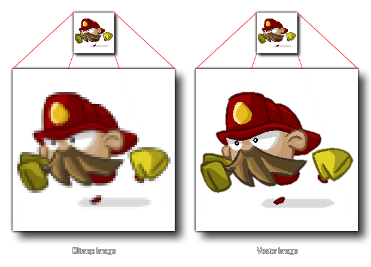
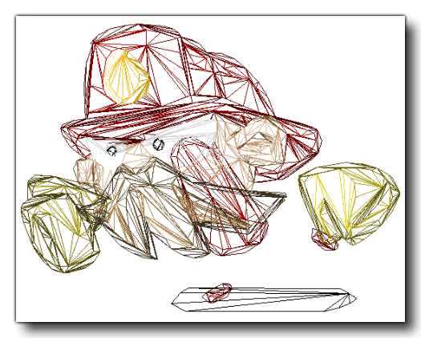
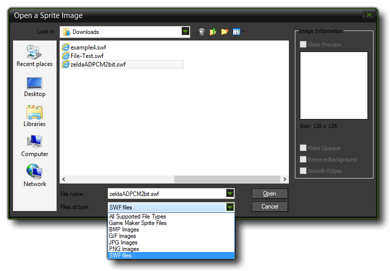
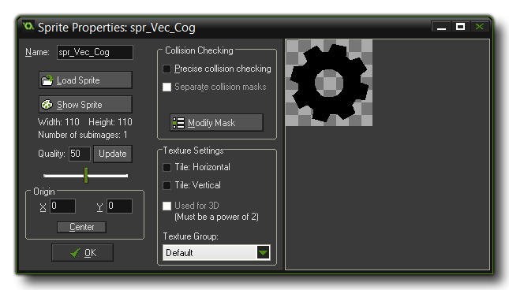

GameMaker: Studio has limited support for vector sprites.
Generally all sprites in GameMaker use bitmaps which, while
flexible in terms of content, place limitations on both the size
and number of frames possible in a sprite before memory usage can
become prohibitive. Vector sprites work around these limitations by
storing and drawing their contents differently - instead of a grid
of pixels, which can become blocky or fuzzy when scaled, they are
drawn as triangles which can be scaled up without losing
definition, as illustrated in the image below:

To help you visualise how this is done, the image below is of the
same vector Fireman sprite only now we can see the polygons that
are used to make the image within GameMaker: Studio:

However, nothing is ever for free when it comes to programming
games, and the tradeoff here with vector sprites is that they are
more expensive to draw than bitmap sprites and this speed
difference increases as the complexity of the animation being
imported increases. Also, their memory usage is affected by their
visual complexity, unlike bitmap sprites. Baring that in
mind, they do make it possible to add large animated graphics in
ways that would be impossible using traditional bitmapped
sprites.
On the flipside of the performance equation, because vector sprites
only draw the pixels absolutely required (unlike bitmap sprites
which also "draw" the empty space around the image) they can be
cheaper from a GPU perspective. Also, in general vector sprites are
much smaller than their bitmap equivalents - for the fireman
example above the sizes of the various sprite types are as
follows:
Bitmap at 70x68 = 4x70x68 bytes x 12 frames = 223k
Vector = 54k
If you quadruple the resolution of the sprite:
Bitmap at 280x272 = 4x280x272 bytes x 12 frames = 3570k
Vector = 54k
So as you can see a lot of memory can potentially be saved by
using vector sprites, and we still have a lot of potential for
future space savings.
Currently GameMaker: Studio can only import vector images
from SWF format files, and the way of importing them into
the program is almost identical to that for adding a normal bitmap
image. To add a vector sprite, create a new sprite, which will
bring up the standard Load
Sprite dialogue, but make sure that you have selected *.swf
from the file filter at the bottom.

Hitting the "load" button will add the vector image or animation to
the resource tree, with a progress bar being shown as the file is
processed. Note that, depending on the complexity of the file, this
can take a while (up to a minute for more complex animations). When
processing has finished you'll be returned to the sprite properties
dialogue, which will now look like this:

As you can see it looks like the normal sprite dialogue, with the
first frame of the vector file shown in the image preview window on
the right. There are a couple of changes from a normal sprite
dialogue though. Firstly, the Edit Sprite button has gone
since there aren't any bitmaps to edit in this sort of sprite, and
secondly, a new Show Sprite button has been added. This
button will open the vector file in whatever application is
associated with it. This would normally default to your web
browser, but if you do not have a program associated with the file,
then nothing will happen and as the button is disabled (you can
resolve this by opening Windows Explorer and
right-clicking on a vector file, then using "open
with" to choose the program to associate with these files). You
can also associate a viewer for these sprites in the Editor Preferences
within GameMaker: Studio and the Show Sprite button
will open that instead of the default viewer.
NOTE: How the image looks in your chosen preview editor will not be the same as how it looks in your game, nor how it looks in the preview window of the sprite editor. The vector image will be imported at the size it was created at, which is not necessarily the size that the preview is shown at (browsers will normally scale the image to fit, for example).
You can also set the quality of the vector sprite when
drawn. This will simply reduce or increase the number of triangles
used to generate the sprite, with the default quality value of 50
being sufficient normally for most games, however you should
experiment with this value if you are using extreme scaling, or are
having performance issues. From this point the other parts of the
editor should function the same as they do for bitmap sprites.
There are a number of things that you should be aware of when
importing vector sprites, with the most important being that some
of the sprite drawing and sprite management functions are not
supported for technical reasons, particularly those draw functions
that draw only part of a sprite, or that "skew" the position in
some way (see the individual
draw_sprite_*() functions for exact details of which). However
the basic sprite drawing functions are fully supported as are the
built in
sprite variables. You can also set different
anti-aliasing (AA) values for the SWF sprites being drawn
using the functions found here:
Drawing Sprites and Backgrounds.
You should also be aware of the following:
- When importing a *.SWF file, Actionscript is not supported, so if your SWF relies on it to work correctly then it probably won't turn out right. Similarly, any embedded movie clips that have their own timeline will only have their first frame shown throughout the animation - all animation must be on the main timeline.
- If your vector file has particularly fine detail you may occasionally find that holes or strange triangles will appear in the resulting sprites. This is because at small scales geometry can sometimes collapse together to create shapes that just don't triangulate well. In this case you have two options - you can scale up the contents of the vector file which will give the importer more room to play with, or you can try to reduce the level of detail in the object that is breaking.
- GameMaker: Studio uses the stage size of the SWF as the bounds of the resulting sprite. However, if you have anything on the stage outside these bounds it is still drawn. This means that you should either try to avoid putting anything outside your stage bounds if you don't want it to be shown, or use a mask layer to limit drawing to this area.
- The stage size also affects the size of any collision masks that are generated, therefore if you have a large stage size and a lot of frames in your animation you can potentially eat up a lot of memory. So, only use precise collision masks if you really need it.
- As a SWF file is created from multiple layers, some of which potentially overlap, alpha doesn't work quite the way it does with bitmap sprites - overlapping areas will not look as transparent as other parts of the sprite, as the pixels there are being drawn over multiple times.
- Bitmap fills are supported though if you use tiled bitmap fills as part of your SWF file you need to make sure the bitmap is a power-of-two in size, otherwise it won't tile properly. Text rendering is also supported, but you need to embed the font in your SWF file for it to show up in the resulting sprite. Also, currently only left-aligned single line text is supported.